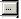

Working with Grids
|
Working with Grids |
Working with grids (or Data Tables) - General Procedures
Grids (or data tables) are extensively used in EnergyGauge Summit. These spreadsheet like grids can display large amounts of data in a concise fashion in addition to providing the ability to edit displayed data. They appear on several forms, such as Project and Master Libraries, 'Water Heating', 'External Lighting', 'Piping', 'Space', etc. A clear understanding of how to work with grids is critical in effectively using the software. The general actions that the user is likely to perform with grid are described in this section.

Typical Data Grid Functions
Add rows to grids
There are generally two ways to add rows to grids.
1) Select the grid (just click anywhere on the grid) using the mouse and then press the 'Insert' key on the keyboard. Follow the instructions that appear.
2) Right-click the mouse over the grid and then select the ‘Add’ option from the pop-up menu. Follow the instructions that appear.
Delete a rows on a grid
There are generally two ways to delete rows from a grids.
1) Select any cell on the row you want to delete using the mouse and then press the 'Delete' key on the keyboard. Follow the instructions that appear.
2) Right-click on the cell in the row you want to delete on the grid and then select ‘Delete’ from the Pop up menu. Follow the instructions that appear.
Move between cells on a grid
Use the mouse to click on a cell. Also, you can use the Tab key to move from cell to cell.
Edit individual grid cells
There are several types of grid cells.
Cells with numeric or text data
These are cells where numeric or text data can be entered. Double-clicking the cell puts it in edit mode. Pressing the F2 key also has the same effect. You can then enter the new value. To complete the edit, press the 'Enter' key on the keyboard or click elsewhere on the grid. If the cell is already active (as shown by a light focus rectangle), just begin typing the new value to edit the cell.
Cells where

appears when selectedThese cells usually require data from other dialogs. Click on the button and follow the instructions that appear.
Cells where appears when selected
These cells require selection from the drop down. Click on the button and make your selection.
Cells where appears when selected
Values in these cells can be changed up or down. Click on the up or down arrow depending on what you want to do.
Cells where or appear
These specify an unselected or selected option. Values in these cells can be toggled by clicking on the cell, or pressing your 'Space-Bar' key on your key board.
Note: Some grid cells may not allow any of the above. It is usually because the cells are temporarily or permanently non-editable.
Sorting grids
Most grids can be sorted by clicking the column header. To sort a single column, click on that column header. Clicking a header on an already sorted column reverses the sort order and resorts. You can sort multiple columns (up to three) by holding down the 'CTRL' key and clicking up to three column headers one after another (while keeping then 'CTRL' key down).
Manually or automatically (Auto size) resize grid column widths
In general, double clicking on a column header will auto size the column width to the largest entry in that column. To auto size all columns, double click the top left corner label that is common to both the column headers and row labels. You can manually resize column widths by moving your mouse between column headers until a resize cursor appears. Hold the left mouse down and move left or right.
Manually resize Grid Row heights
You can manually resize row height by moving the mouse between row labels until a resize cursor appears. Hold the left mouse down and move up or down.